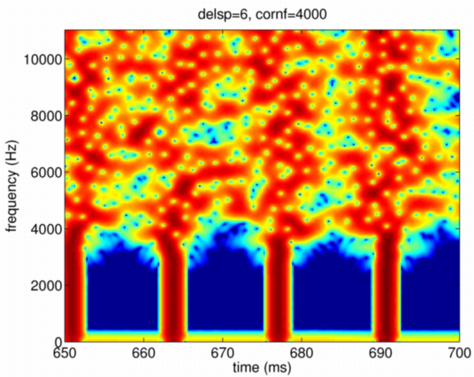

| | 群遅延変動の標準偏差：groupDelayStandardDeviation | Contents | Index |
この制御パラメタの既定値は0.5(ms)としてあります。 群遅延のランダムな変動の標準偏差を設定するパラメタです。 このパラメタを操作することで、駆動用信号がどのようになるかを 以下で説明します。
まず、群遅延の変動を0とした場合の駆動信号を調べます。 ここでは、これまでに例として説明で用いてきた音声(vaiueo2d.wav)が分析されており、 パラメタ(f0raw,n3sgram,ap)が求められているものとします。 合成時のフィルタ特性を規定するn3sgramを周波数や時間に依存しない一定値とし、 音源の非周期成分の相対レベル(dB)を定めるapを十分に小さな値として 合成関数を呼ぶことにします。 さらに、群遅延変動の標準偏差であるgroupDelayStandardDeviationという フィールドの値を0とした構造体prminSを次のように定義して渡すことにより、 群遅延の変動を0とした場合の駆動信号が得られます。 なお、他の制御パラメタである群遅延変動の遷移周波数は4000Hz, 群遅延変動の空間周波数帯域幅は70Hzの既定値が用いられます。
prminS.groupDelayStandardDeviation=0.000001; sy0 = exstraightsynth(f0raw,n3sgram*0+100,ap*0-80,fs,prminS);
この場合の波形とスペクトログラムを調べることにします。 例えば、次のようなコマンドで確認することができます。 ここでは、フレーム間隔の既定値が1msであることを利用して時間軸を設定しています。 また、スペクトログラムの作成にMatlabのspecgramを用いています。
figure;
plot((1:length(syZ))/fs*1000,sy0);
axis([650 700 -30000 45000]);
set(gca,'fontsize',16);
xlabel('time (ms)');title('delsp=0, cornf=4000');
figure;
nsgnnZ=specgram(syZ,512,fs,90,85);
[nr nc]=size(nsgnnZ);
imagesc([0 nc*5000/fs],[0 fs/2],max(45,dB(abs(nsgnnZ))));axis('xy')
axis([650 700 0 fs/2])
xlabel('time (ms)');ylabel('frequency (Hz)'); title('delsp=0, cornf=4000');
以下の図は、母音区間の終了部分付近で基本周波数が 75Hz程度になっている部分に対応する駆動信号の波形です。 パルスの横の信号の固まりは， 標本化周期以下の分解能でパルス位置を設定する際に生ずる ナイキスト周波数での位相の不連続を調整するために生ずる副作用です。 この様子は，次のスペクトログラムを見ると良く分かります。
以下の図は、同じ信号を短時間スペクトログラムとして表示したものです。 この場合の標本化周波数は22,050Hzです。 図から、ナイキスト周波数の付近でパルスに対応して エネルギーの集中している部分が湾曲していることが分かります。 なお、ここでは、駆動信号の帯域毎のエネルギーの偏りを見やすくするため、 時間窓長を約4msとし、フレーム周期を約0.23msとしています。 暖色系がエネルギーの多い部分を表し、最も エネルギーの多い部分は、茶色になるように疑似カラーが設定されています。 （最もエネルギーの多い部分を周波数方向に追跡した軌跡が、 近似的に群遅延を表しています。）

| | 群遅延変動の標準偏差：groupDelayStandardDeviation | Contents | Index |